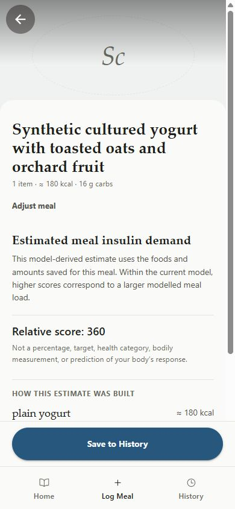

Understanding food
starts with the meal.
Meal-entry prototype · Research in progress
I’m building INSIGHT to make people more conscious of how food affects the body, including insulin’s role. Today’s prototype focuses on meal records you can enter, correct, save and reuse.

A correction should survive the next step.
I designed the meal-editing flow and tested corrections, save/reload and draft protection on a phone.
What works todayManual meal entry, correction, saving and reuse.
Any insulin score in this earlier screen is a research model—not a measurement of a person’s response. Insulin prediction is not clinically validated.
What is still unfinished
Automated photo recognition is not operational. Native Android is unfinished.
Interaction design · Phone testing
Explore the code